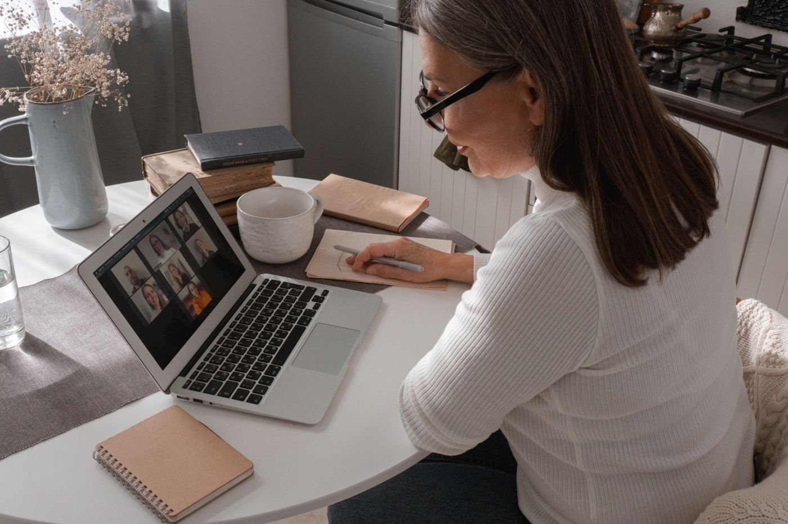
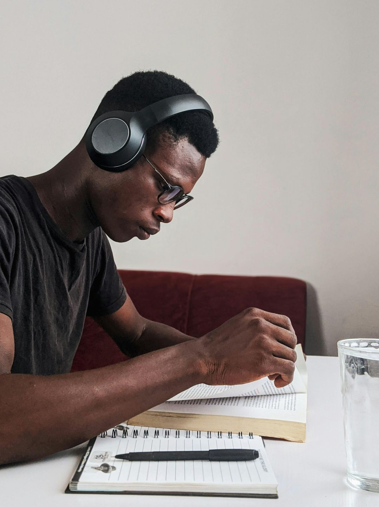

Online German course
Live video classes with a teacher and the same group, on fixed days at the same time every week. Between classes you practice with instant feedback, and your teacher corrects your homework. From €24 a month.
How the German classes work
Placement test
A short test sets your level, from A1 to C1, and places you in the right group for you.

Live classes
German video classes with your teacher and the same group, on fixed days at the same time every week.
Corrected homework
Your teacher sets the homework and returns it corrected: the grade, your strengths, what to improve and a corrected example.
Practice whenever you like
Exercises at your level with instant feedback, flashcards with the vocabulary from class, and tasks in exam format.

German levels from A1 to C2
The Common European Framework of Reference for Languages describes six levels of language ability. At Alimun there are groups for each level, and the placement test places you between A1 and C1.
A1, beginner
You understand and use everyday expressions and very simple sentences, can introduce yourself and ask about personal details, as long as the other person speaks slowly and clearly.
A2, elementary
You get by in simple, familiar situations such as family, shopping, work and where you live, and describe your surroundings in simple words.
B1, intermediate
You handle most situations while traveling, talk about experiences, plans and hopes, and briefly explain your opinions.
B2, upper intermediate
You understand the main ideas of complex texts, including technical ones in your field, and speak fluently enough for a natural conversation with native speakers.
C1, advanced
You use the language flexibly and effectively in social life, study and work, and write clear, well-structured texts on complex subjects.
C2, proficient
You understand almost everything you read and hear with ease, and express yourself spontaneously, fluently and precisely, catching fine shades of meaning.
German certificates
The certificates most often asked for to live, study and work in German-speaking countries. At Alimun you practice with tasks in the same format.
Goethe B1
The Goethe-Zertifikat B1 from the Goethe-Institut tests reading, listening, writing and speaking, and the parts can also be taken as separate modules. It is one of the certificates most often asked for to live and work in Germany.
Goethe B2
The Goethe-Zertifikat B2 certifies independent German in the same four skills. It is often asked for in skilled jobs and for entry to some degree programs.
telc B1
The telc Deutsch B1, known as the Zertifikat Deutsch, certifies the B1 level and is recognized by the German authorities, for example in applications for citizenship.
These are not official exam materials. Alimun is not affiliated with the exam bodies.
Learning German online: what to know before you start
German is the most widely spoken native language in the European Union, and the key to Germany, Austria and Switzerland. With a regular method, its reputation as a hard language fades quickly.
Why German is worth it for English speakers
German and English are both Germanic languages, so thousands of everyday words look and sound alike: Haus and house, Buch and book, Wasser and water, trinken and drink. That gives you a real head start on vocabulary.
Germany is Europe’s largest economy, and German opens doors in engineering, research, the car industry and many international companies, as well as for study at German universities.
What English speakers find hard
The main hurdles are the four cases, the three genders and the word order, with the verb at the end of a subordinate clause. Sounds like ü, ö and the ch in ich also take practice.
In live classes you use the language from the first day and your teacher corrects the mistakes that keep coming back. Between classes you review with exercises and flashcards until the structures become automatic.
How to know which level to start from
The Common European Framework of Reference divides language ability into six levels, from A1 to C2, and German certificates follow the same scale. Knowing your level saves you from repeating what you already know.
The Alimun placement test places you between A1 and C1, and your group and exercises follow the result.
German for work, study and moving
If your goal is a job or a move, find out early which level and certificate are required: they are usually stated in the job listing or by the institution you are applying to.
At Alimun you can practice tasks in the format of Goethe B1, Goethe B2 and telc B1 and prepare steadily, on fixed days and times every week, before you leave.
Plans and prices
Choose how much attention you want: the smaller the group, the more time you have to speak. With the yearly plan you pay for ten months instead of twelve.
€24a month
Community
Groups of about 35 people, live classes and access to the community.
€59a month
Focused
Groups of about 17 people and weekly feedback on your work.
€109a month
Intensive
Groups of about 6 people, plus a one-to-one class every week.
€269a month
1 on 1
Private classes with your teacher, based on three classes a week.
Frequently asked questions
How much does the online German course at Alimun cost?
Plans start at €24 a month with Community, in groups of about 35 people. Focused costs €59, Intensive €109 and private 1 on 1 classes €269 a month. With the yearly plan you pay for ten months instead of twelve.
Are the classes live or recorded?
They are live video classes with a teacher and always the same group. Alimun does not record classes: after each class you get the session notes, the new vocabulary and your homework.
On which days and at what times are the classes?
Each group meets on fixed days at the same time every week, with the same teacher and the same group. That way learning becomes part of your week.
Do I need a certain level to start?
No. There are groups from A1, and a short test at the start places you between A1 and C1 so that you join the right group.
Can I prepare for a certificate?
Yes, you can practice tasks in the format of Goethe B1, Goethe B2 and telc B1. They are not official materials, and Alimun is not affiliated with the exam bodies.
Can I cancel at any time?
Yes, you can cancel at any time in the billing settings of your account, and you keep access until the end of the paid period, as set out in the Terms and Conditions.
What do I need to attend the classes?
A computer or other device with a camera, a microphone and a stable connection. The classes run in the browser, with nothing to install.
From the blog
All articles
 TOEFL vs IELTS: which test should you take for a US university?TOEFL iBT or IELTS Academic for a US university? The 2026 TOEFL 1-6 scale, IELTS bands, how scores compare, at-home testing and how to choose.Read the article
TOEFL vs IELTS: which test should you take for a US university?TOEFL iBT or IELTS Academic for a US university? The 2026 TOEFL 1-6 scale, IELTS bands, how scores compare, at-home testing and how to choose.Read the article The German integration course explained: who can join, what it costs, what changed in 2026Who must or may take the German integration course, its 700 lessons, the 2.29-euro lesson fee, exemptions, the final tests and the 2026 admission changes.Read the article
The German integration course explained: who can join, what it costs, what changed in 2026Who must or may take the German integration course, its 700 lessons, the 2.29-euro lesson fee, exemptions, the final tests and the 2026 admission changes.Read the article German pronunciation: a guide for English speakersThe German sounds English speakers find hardest: long and short vowels, ä ö ü, ß, the two ch sounds, the German r, ei vs ie, final devoicing and stress.Read the article
German pronunciation: a guide for English speakersThe German sounds English speakers find hardest: long and short vowels, ä ö ü, ß, the two ch sounds, the German r, ei vs ie, final devoicing and stress.Read the article